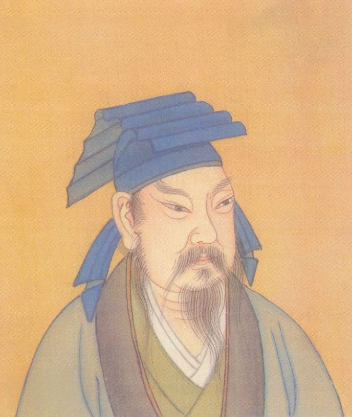
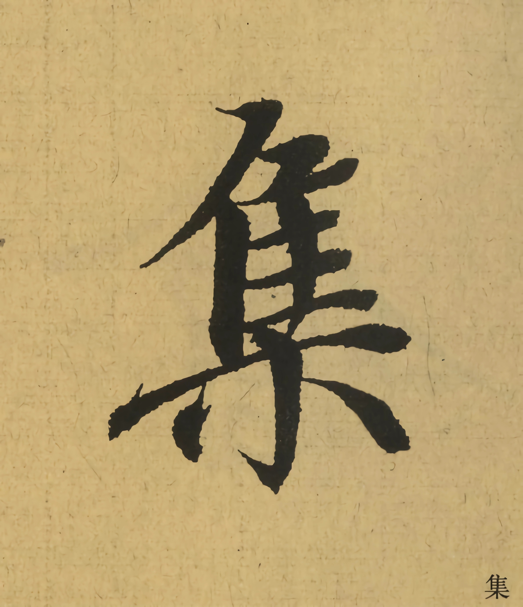
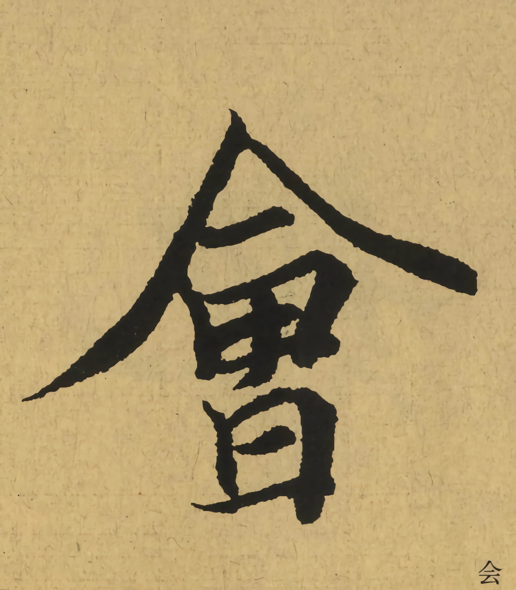
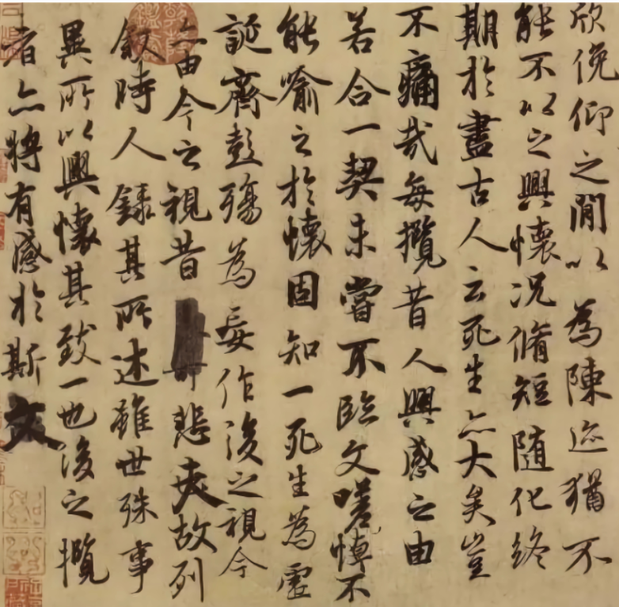
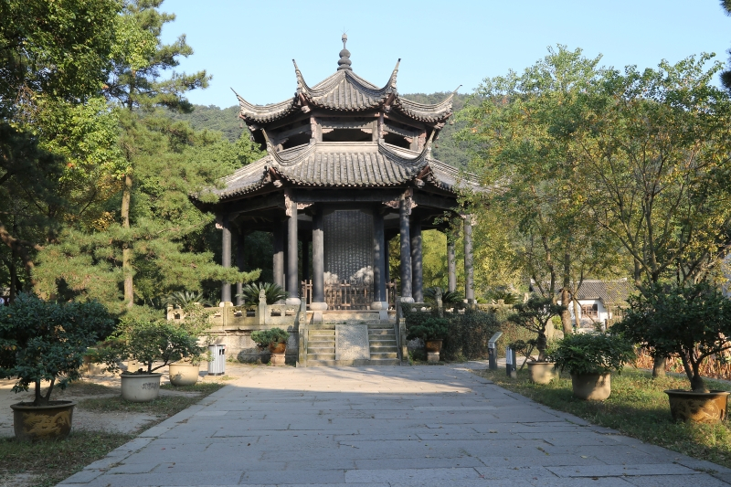
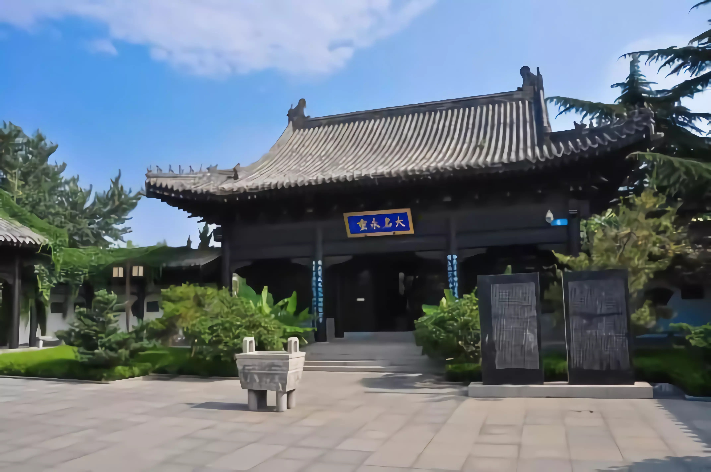
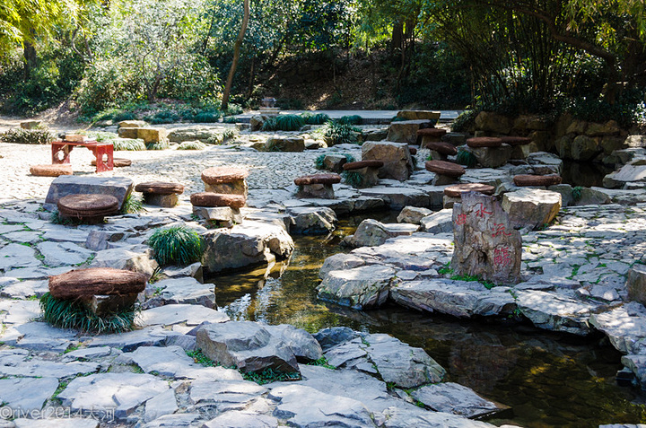
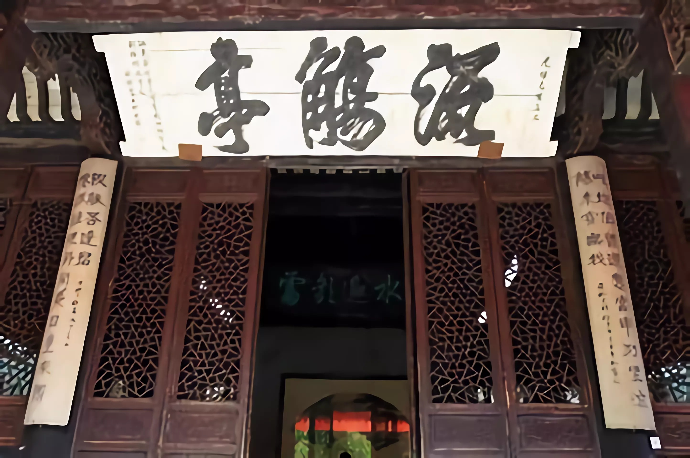
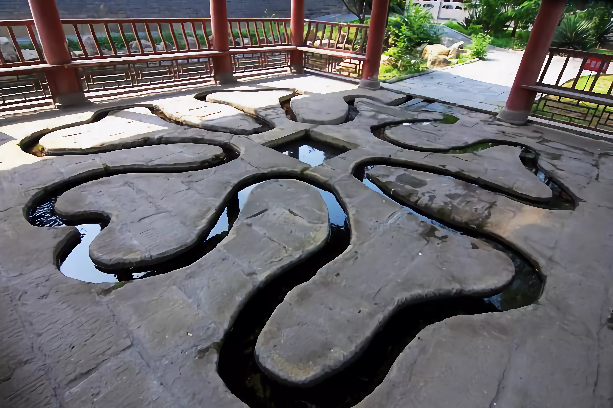

王羲之字逸少，东晋时期著名书法家，有“书圣”之称。琅琊（今属山东临沂）人，后迁会稽山阴（今浙江绍兴），晚年隐居剡县金庭。
王羲之历任秘书郞、宁远将军、江州刺史，后为会稽内史，领右将军。其书法兼善隶、草、楷、行各体，精研体势，心摹手追，广采众长，备精诸体，冶于一炉，摆脱了汉魏笔风，自成一家，影响深远。风格平和自然，笔势委婉含蓄，遒美健秀。
王羲之所写的书法，楷书以《黄庭经》《乐毅论》等最有名，行书以《快雪时晴帖》《丧乱帖》最出色，草书则以《十七帖》最传神，代表作《兰亭集序》更是被誉为“天下第一行书”。
书成换鹅
王羲之很喜欢鹅，他认为养鹅不仅能陶冶情操，还能从观察鹅的动作形态中悟到一些书法理论。有一次王羲之出外游玩，看到一群很漂亮的白鹅，便想买下，一问之下知道这些鹅是附近一个道士养的，便找到那个道士想与他商量买下那群鹅。那个道士听说大名鼎鼎的王羲之要买，便说：只要王右军能为我抄一部《黄庭经》，便将拿些鹅送给他。王羲之欣然答应，这便成就了书成换白鹅的佳话。
入木三分
晋帝当时要到北郊去祭祀，让王羲之把祝词写在一块木板上，再派工人雕刻。刻字者把木板削了一层又一层，发现王羲之的书法墨迹一直印到木板里面去了，他削进三分深度，才见底。木工惊叹王羲之的笔力雄劲，书法技艺炉火纯青，笔锋力度竟能入木三分。
坦腹东床
郗鉴的心腹管家带重礼到王导家择婿，王府子弟都精心准备来迎接，只有王羲之在躺在东床上坦腹仰卧，无动于衷。管家回去后将此事告诉郗鉴，郗鉴说：“我要选的就是这样的人，走，快领我去看。”郗鉴来到王府，见王羲之才貌双全，既豁达又文雅，当场下了聘礼，择为快婿。这就是“东床快婿”的由来。
尖峰入笔

王羲之用笔基本上都是侧锋入纸，然后扭转为中锋，或者就是直接用侧锋。但是不论是中锋还是侧锋，有个显著的特点就是：尖锋。每一个字的起始笔画都是尖锋入笔，然后转侧锋或是中锋，这样有利于下一个笔画的运笔，便于掌控整体走势。我们可以欣赏旁边的这些字，就可以看出尖锋入笔的妙处了。
像这样的“之”字，单单从外形上看也好不到哪里去，但为什么历代书法家如此推崇王羲之的书法呢，其中主要的原因就是迷恋的是王羲之这种游丝引带的感觉，顺畅无比的笔法。王羲之用过这一个字，就是在转折之处会迅速调锋，所以力道不会在转折处流失。这就是王羲之的字笔笔“入木三分”的秘密所在。
字中气韵

兰亭序之所以写得好是跟这个字中间的“气”有关。这个“气”是什么？就看这个“集”字。请看写字连在一起的，我们都看得出来，撇捺两笔是不连接的，但是王羲之写出来的好像有关联的两笔，王羲之的最后一捺那一笔也是翘起来的。一撇翻过来，一捺翘起来，这笔点就到位了。实际上这个字整体上就是一个生命的过程，字没停下来，字就是这样，这个就叫做“气”。有笔画之处即为“气”也。
更微妙的地方是字与字之间也关联，看从一笔到另一笔，其实也连在一起的。所以一篇字写下来感觉是一口气没断过。哪怕我呼吸一下，就像唱京剧的人，有些句子，顿一顿，一口气运出来以后，和上面是接下来的，这样才感觉到如星云流水气息通畅，这个就是王羲之字的“气”，从书法中看到了他的“气”。

“韵”是什么，有字的是黑的地方，留出来是什么？就是个白的地方。我们看这个“会”字，这个字周围空了很多地方，仔细看空的地方，其实是作者精心的平衡的。效果怎么来的？当时是念出来的，念了以后笔走黑处，心在白处，叫做“即黑当白”，所以白的地方的味道那就更强了，因为这是一个心中的气，这种感觉——画笔与留白互相之间连带着、展现出它自身的变化和牵连。
这股韵在哪里？气韵有的地方，留白好像里面的一个活的东西冲进去就回荡开来，回荡之间就是每一个留白之间的连接、激荡、冲突和遮蔽。有时留白被阻断，有时候留白又冲出来占据一片位置，这种开合之间，气韵的感觉就出来了。气韵生动，其实写行书也有气，只是写到行书的时候，气韵的生动就更为巨大。
真情流露

兰亭集序上面有十几处涂抹修改的痕迹，为何还能被称之为天下第一行书呢。如文章最后一段“悲夫”和“文”处涂抹十分明显，与整篇文章的风格显得格格不入。但是欣赏作品时要结合当时的背景。
兰亭集序，是当天为兰亭诗集所作的序文，即兴而作，加上王羲之当时肯定饮了不少酒，自然会有涂抹修改。涂改是真实的、自然的、无意的，暴露了书写者的真实想法和漫无目的的书写意图。正是这些涂抹的痕迹将王羲之的书写状态和心理活动全方位的展现出来，对人生的感慨怅然之情也跃然于纸上。颜真卿的《祭侄文稿》更是全篇大涂大抹，其悲愤之情力透纸背，跃然纸上。因此后人在临摹时也不会刻意修改原作的涂抹痕迹，而是将它们原原本本的保留下来。
兰亭风光






兰亭，地处绍兴城西南25华里的兰渚山下，与禹陵、东湖并立为绍兴市郊三大著名风景点之一。相传春秋时期越王勾践曾在此植兰，汉时设驿亭，故名兰亭。兰亭是东晋著名书法家，书圣王羲之的园林住所，是一座晋代园林，一直因书法名作《兰亭集序》而名闻海内外。
“此地有崇山峻岭，茂林修竹，又有清流激湍，映带左右”。兰亭四周浅溪淙淙，幽静雅致，十分符合古代修禊之礼对于自然地理环境的要求。园内著名景点有“鹅池”、“曲水流觞”、“兰亭碑”、“御碑亭”、“右军祠”、“流觞亭”等。其建筑精巧古朴，是不可多得的园林杰作。
当AI遇见兰亭集序
本视频所有画面均为AI生成，力求通过AI作图还原兰亭集序中的场景。但是AI终究不能对文言文进行深刻透彻的理解，因此有些画面可能不是很贴合原文，敬请谅解。